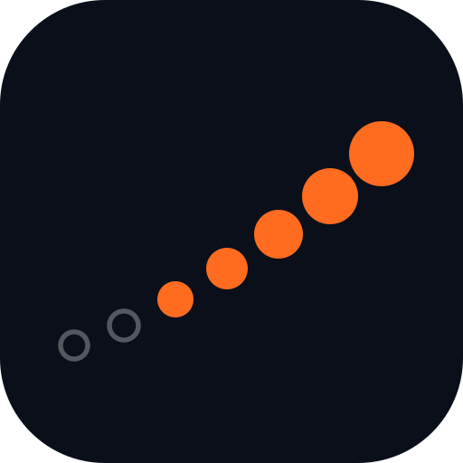

The Gymind mark is built from the product's own 7-day streak strip — a row of day markers that build from an empty rest day, through logged days, to a solid check. It reads as consistency and completion, and it belongs only to a training-data app. It is not a dumbbell, not a heartbeat.

Keep clear space equal to one streak-dot diameter on all sides.
Minimum sizes — mark 20px, wordmark 96px wide. Below that, use the favicon.